How Value Flows from the Job Graph
An Introduction to Advanced Jobs To Be Done
What this chapter is about
- If you've heard about Jobs To Be Done and you're looking for ways to apply it in practice
- If you want to learn how to create product value
- If you've heard the term Advanced Jobs To Be Done and want to know what it actually means
Introduction
Jobs To Be Done is a beautiful and powerful theory. But what's the point of theory if it doesn't help you make better decisions?
The goal of Advanced Jobs To Be Done (AJTBD) is to give you algorithms for solving the business problems product teams actually face — and to answer the questions that come up when you launch and grow a product.
AJTBD is a practical extension of JTBD. To get from "JTBD is a beautiful idea" to "JTBD that solves business problems," I spent five years searching for answers to what is product value, and how do you create it? I had to connect needs to goals to emotions, account for the brain's predictive function, develop a methodology for interviews and research using templates like I want to {verb}, and tie all of it back to the problems a product team needs to solve every week.
In this chapter you'll meet the foundational principles of AJTBD. You'll learn that product value is the ability to perform a customer's Jobs more energy-efficiently; you'll meet a new unit of analysis — the Job Graph; you'll see how the Job Graph generates algorithms for solving business problems; and you'll see where AJTBD does and doesn't apply.
Everyone says "create value" — nobody explains how
In the previous chapter we established that a Job is the root cause of any human action or purchase, and that Jobs are the expected outcomes the brain formulates to satisfy needs. So in segmentation, and in any product decision, we have to account for the customer's Jobs.
But knowing the Jobs isn't enough. We have to offer the customer something that makes them choose our product over a competitor's.
Needs are the root cause of all action, but most people don't consciously notice them. The brain formulates goals to satisfy needs, and the goals are at least somewhat conscious. Goals = Jobs in AJTBD. But we still don't know how to make the customer pick our product. Presumably, value plays an important role in that choice.
But the overwhelming majority of product builders have no operational understanding of how to create value, and that creates a low-grade frustration around the whole question.
Most people don't actually know the cause-and-effect chain that leads to a purchase. AJTBD describes that chain end-to-end and gives an algorithm for creating value.
Skeptic
"Hold on. 'Create value' is the most overused phrase in product. Every PM book repeats it like a mantra and then describes nothing. Why should I believe AJTBD has a real answer?"
The Job Graph
The Job Graph is the hierarchy of Jobs a person performs in order to satisfy their needs.
The Job Graph is the second unit of analysis in AJTBD (the first is the Job itself) and it is one of the main differences from classical JTBD.
Gallery · How gas stations evolved from the Job Graph
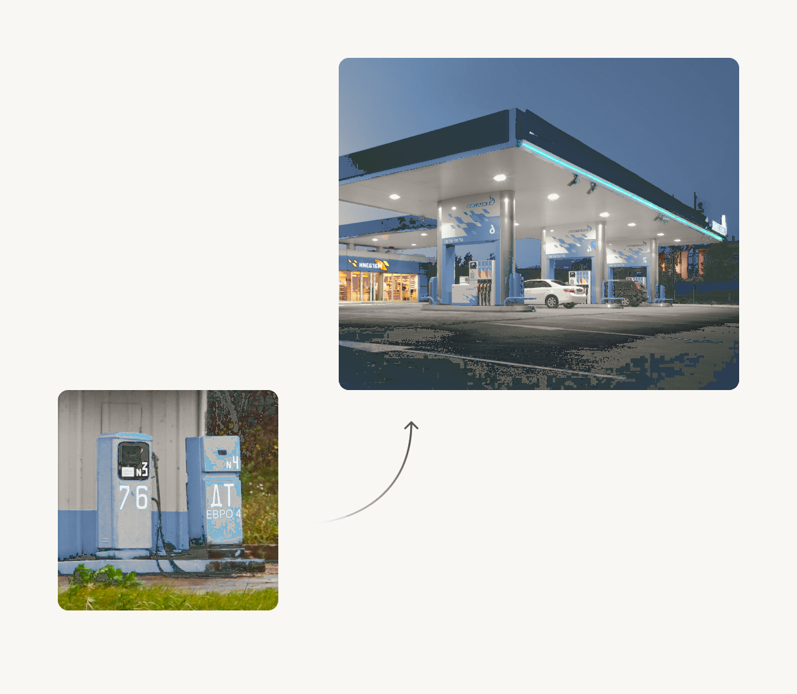
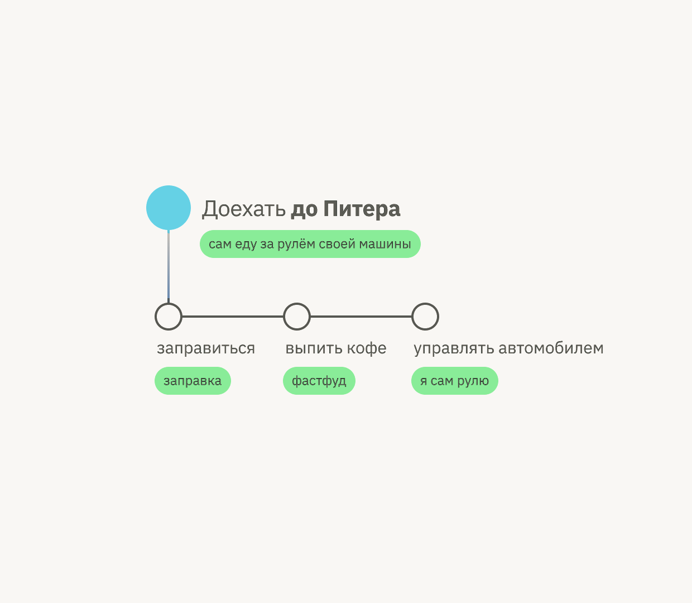
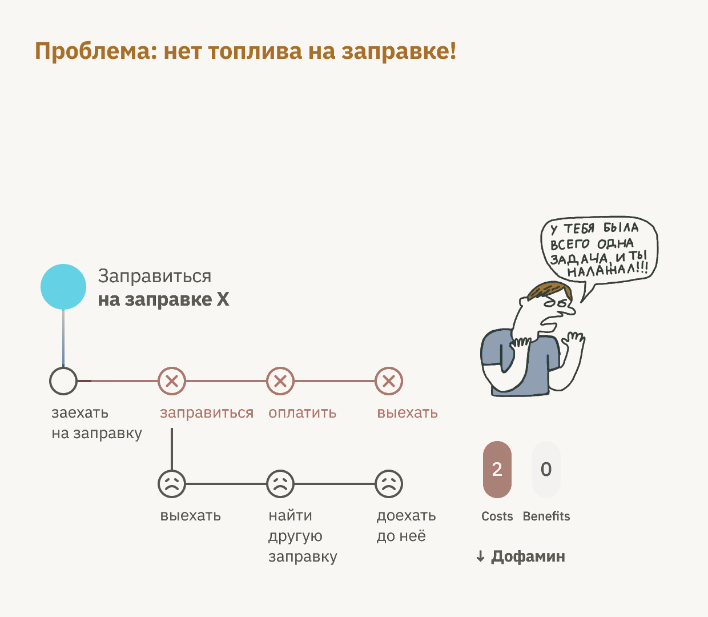
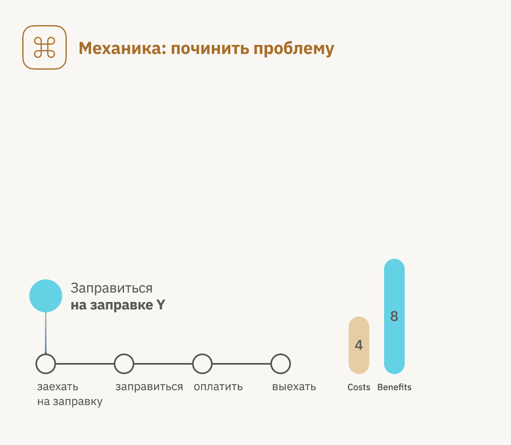
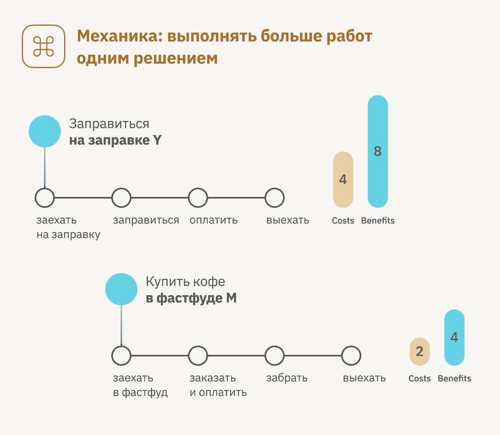
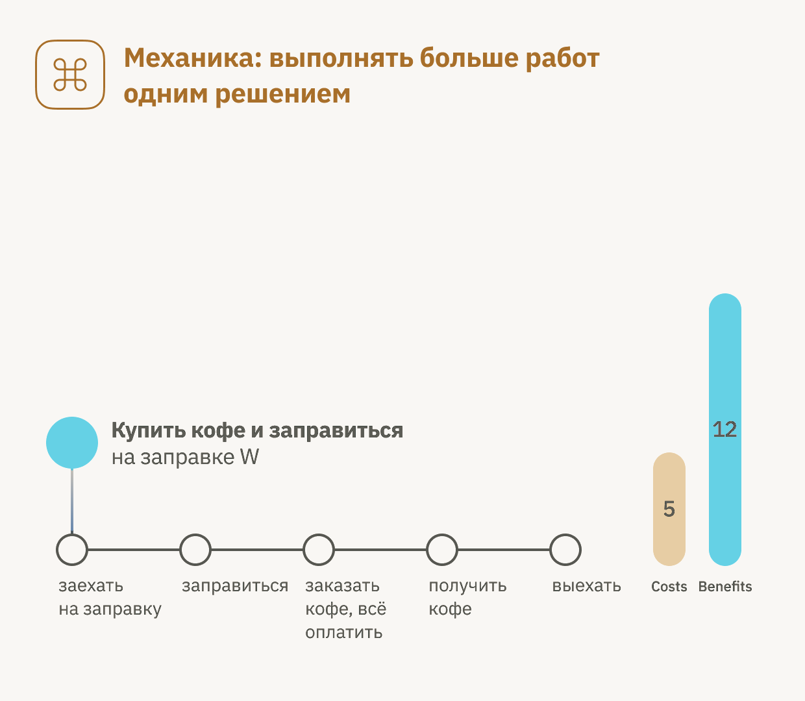
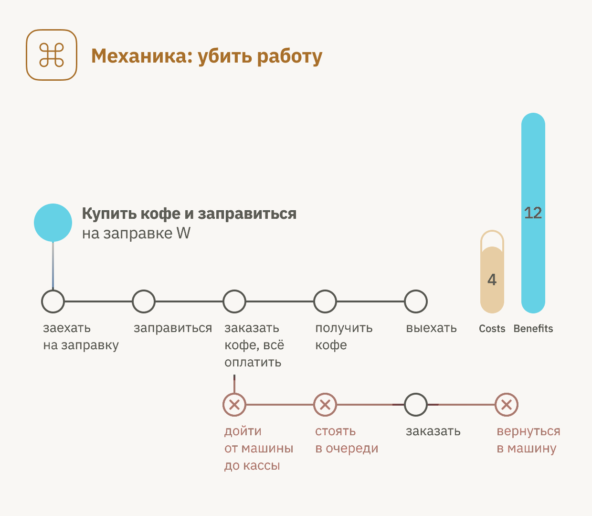
A quick note: "graph" is a math term, not a noble title.
From understanding and reshaping the Job Graph, you derive value, product strategy, and the algorithms for solving business problems: which segment to launch a new product into, how to grow conversion to payment, how to retain and reactivate customers, how to grow average revenue per user, how to escape direct competition, how to build disruptive products, and so on.
If you take any sufficiently complex Job, you'll find that to perform it — if the person decides to do everything themselves — they have to perform a number of sub-Jobs.
A real customer's Job Graph is determined by two things:
- The structure of the Job Graph that the creators of the solution baked into it.
- The customer's choice of which solution to use to perform the Job.
These two principles of how Job Graphs form are what value and strategy flow from. We'll come back to them throughout this chapter.
What is value?
"What is product value, and how do I create it?" is one of the most important questions any product builder must be able to answer. Two years ago I realized I didn't have a good answer — and that the books I'd read on product management, economics, and behavioral psychology didn't either. So I had to do my own research.
Economics textbooks claim that value = benefit – cost.
"The brain's primary job is to predict and manage the body's metabolic resources. Perception, emotion, and action are all consequences of that predictive energy management."
— Lisa Feldman Barrett, Seven and a Half Lessons About the Brain, 2020
If Barrett is right, the brain is, above all else, a resource manager. It manages water, oxygen, glucose, fats, minerals, neurotransmitters — and it manages them like an investor: it spends X units of energy now in expectation of getting 3X in return.
Value is performing the customer's Jobs more energy-efficiently than the alternatives.
But the formula value = benefit – cost doesn't explain two important phenomena: the existence of "problems" and the surprise we feel when something is genuinely valuable.
A note on expectations
Expectations (often unconscious) play a critical role in how the brain assesses the value of a particular solution. This is a thesis we'll come back to repeatedly.
How value flows from the Job Graph
Knowing that value = "performing Jobs more energy-efficiently" doesn't, by itself, do anything for you. You need a repeatable algorithm for creating value.
If you overlay the brain's drive toward energy-efficiency onto the Job Graph, it turns out that absolutely every successful product decision ever made can be explained as the optimization of a Job Graph.
Even simpler: value is created by transforming and simplifying the Job Graph.
Let's break down what a "problem" actually is:
- The Job isn't getting done, and the person feels negative emotions because they spent time and effort and got nothing.
- They feel a dopamine dip because their predictive model was wrong.
- They now have to perform extra Jobs to complete the higher-level Job. I call these "Tax Jobs."
"Simpler", "easier", "more convenient" — these are always the killing of Jobs.
The algorithm for creating value
This gives us the following algorithm for creating value:
- Study the Job Graphs of your focus segments with their current solutions — including the problems they hit and the expectations they hold.
- Generate hypotheses for which value mechanics you can apply on top of those graphs.
- Rank those mechanics by:
- higher levels in the graph
- Jobs in the critical sequence
- Jobs that are performed worst, or where you see the largest customer drop-off
I currently see more than 20 mechanics for value creation, including:
Base mechanics
- Start performing a Job that wasn't being performed at all
- Fix problems
- Perform more Jobs with one solution
- Kill Jobs
- Reduce delays between performing Jobs
- Lower the cost without killing the Job (cheaper)
Composite mechanics
- Climb to the next-higher Job
- Take the Job off the person entirely
- Split the benefit and deliver part of it earlier
- And many others
Skeptic
"OK but isn't this just 'understand your customer and make their life easier'? Every UX person already says that. What's actually new here?"
The algorithm for solving business problems
Business problems are solved by an algorithm of applying value mechanics to the Job Graphs of specific segments.
Gallery · Strategic mechanics in action
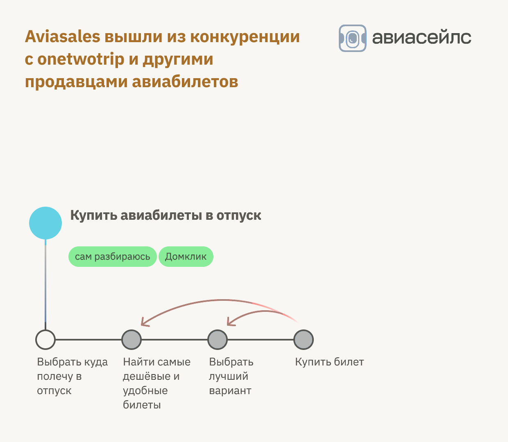
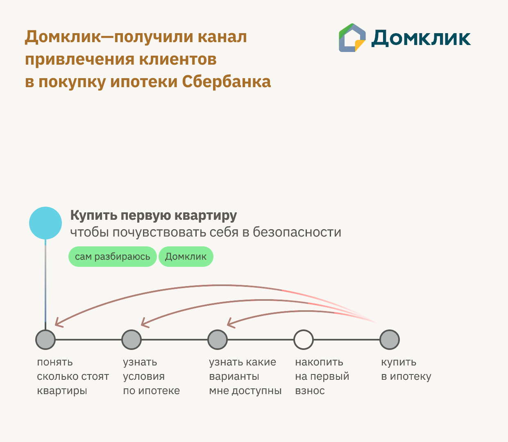
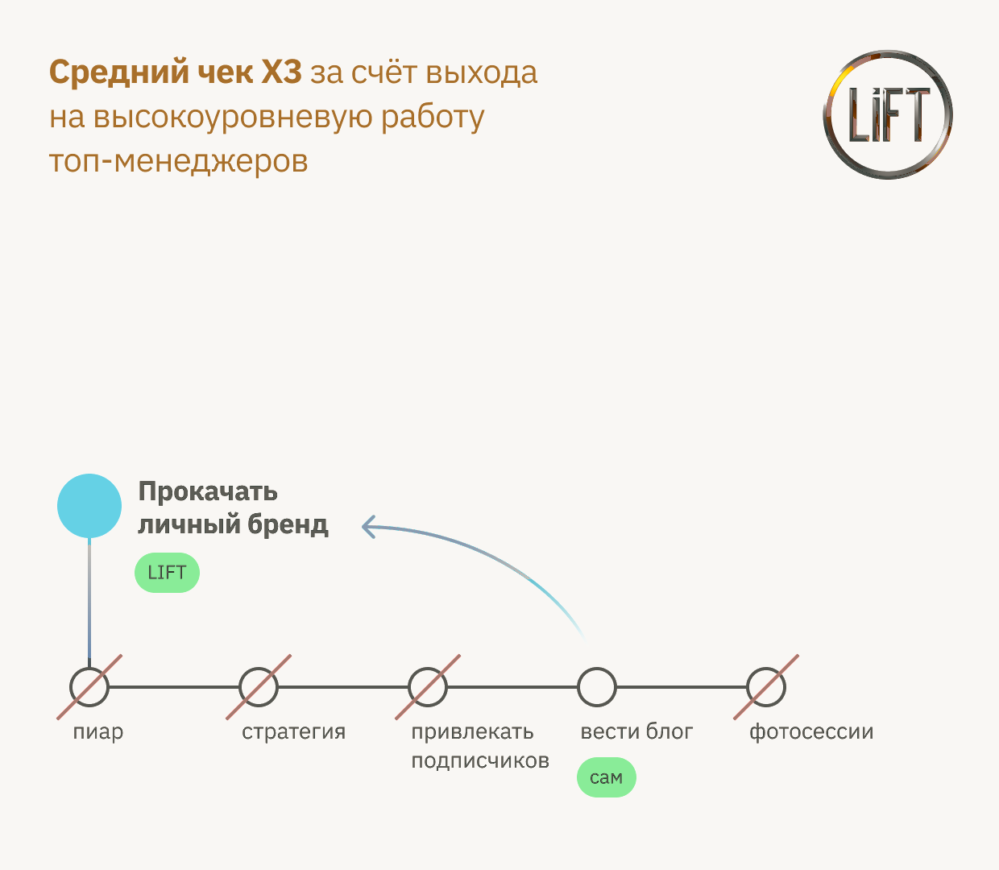
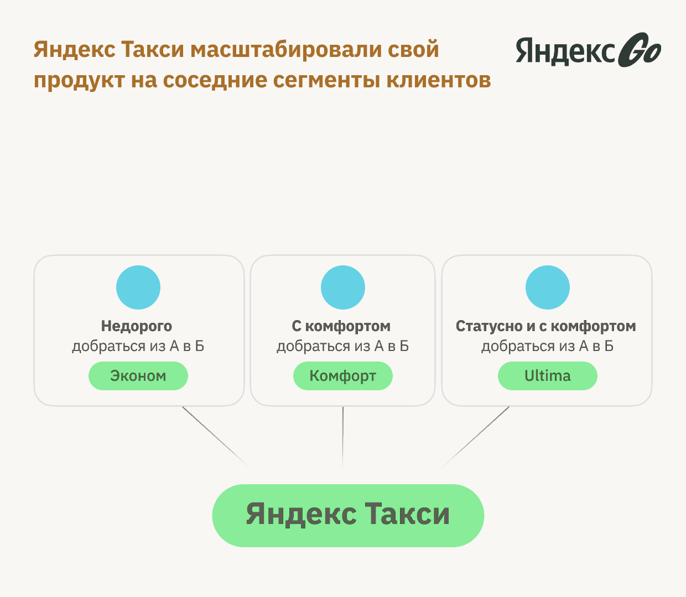
Mechanic — climb to the previous Job
Aviasales (closest US analog: Kayak / Skyscanner) doesn't compete with sites that sell tickets. It performs the previous Job: "find the cheapest, most convenient tickets."
Mechanic — climb to the higher-level Job
Anastasia Gusenstova, founder of LiFT — a personal-brand consultancy — found a segment of senior executives willing to pay $5,000/month for personal-brand work, where the core value is "do everything for me."
Mechanic — slide into a neighboring segment
Yandex Taxi (Russia's Uber) started with the Economy tier. Over time it added neighboring segments by introducing tiers all the way up to Business and Elite.
I currently count more than 50 mechanics for solving business problems.[1]
Innovation is nothing more than the application of one or more value mechanics and product-strategy mechanics — and that is an algorithm.
Where AJTBD does and doesn't apply
Because the main tools for studying Jobs and Job Graphs are interviews and surveys, if a person doesn't consciously know something, we can't reliably surface it.
Examples of products and Jobs where AJTBD has limited reach:
- Addictive products and behavior — social networks, gambling, alcohol, drugs
- Trauma-driven behavior — psychological trauma can drive irrational action
- Deep creative motivation — creative self-realization as the dominant force
- Status, reproduction, and other strong unconscious needs
Where this leads
You now have one of the central insights of AJTBD: value is what happens when you transform a customer's Job Graph in a direction the brain notices as more energy-efficient than the alternatives.
In the next chapter we'll go one level deeper and ask: what, exactly, is a Job?
Skeptic
"Fine. I'll buy the Job Graph idea long enough to see what you do with it. But the moment one of these mechanics fails to predict a real product I know, I'm bringing it up."
Notes
- The full catalog of 50+ mechanics is covered in Part III of this book. ↩